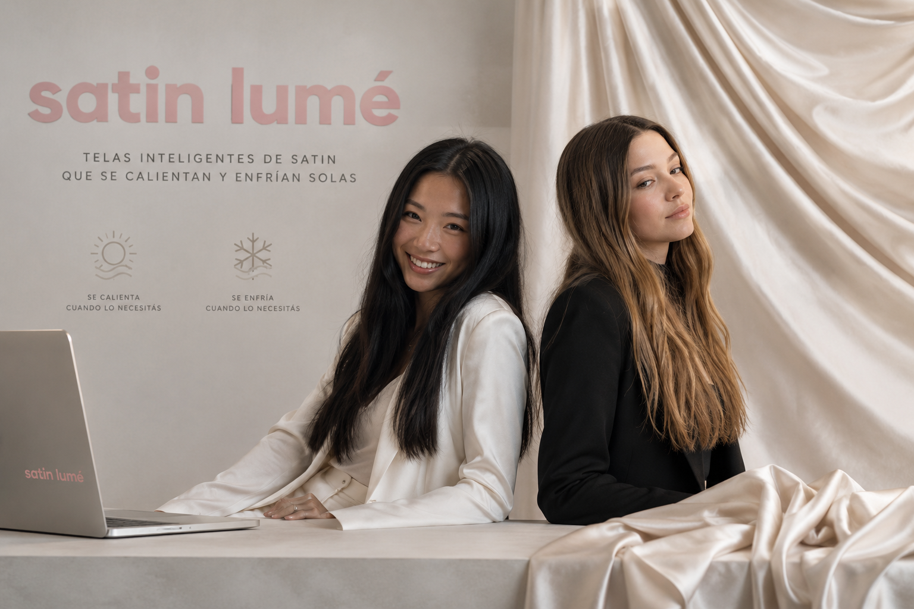

UNA NOTA DE LAS FUNDADORAS
Nuestra historia nació de la búsqueda de transformar algo tan cotidiano como una tela en una herramienta capaz de adaptarse a las necesidades del mundo actual. Creemos que la innovación y el diseño pueden convivir para crear materiales más inteligentes, funcionales y sostenibles. Nuestra empresa desarrolla telas inteligentes que combinan tecnología, comodidad y estética, creando soluciones que van más allá de lo tradicional. Trabajamos para diseñar tejidos capaces de responder al entorno, mejorar la experiencia de quienes los utilizan y abrir nuevas posibilidades en la industria textil. Cada creación representa nuestro compromiso con la investigación, la innovación y la calidad. Esperamos que nuestras telas formen parte de tus proyectos, acompañen tus ideas y sean una muestra de cómo la tecnología puede transformar algo tan esencial como la forma en la que nos vestimos y nos relacionamos con nuestro entorno. Con cariño, Julieta Romano y Jazmín Han

INNOVACIÓN CONSCIENTE
Creemos que el futuro de la industria textil debe combinar tecnología, diseño y responsabilidad ambiental. Por eso, nuestras telas inteligentes son desarrolladas bajo un enfoque sostenible, utilizando procesos más eficientes y materiales seleccionados para reducir nuestro impacto en el planeta. Cada fibra representa nuestro compromiso con la innovación responsable.
NUESTROS VALORES
En nuestra empresa, los valores son el corazón de todo lo que hacemos. Creemos en la innovación, la sostenibilidad y la calidad como pilares fundamentales que guían nuestro trabajo diario. La innovación nos impulsa a explorar nuevas ideas, tecnologías y enfoques para crear telas inteligentes que mejoren la vida de las personas.